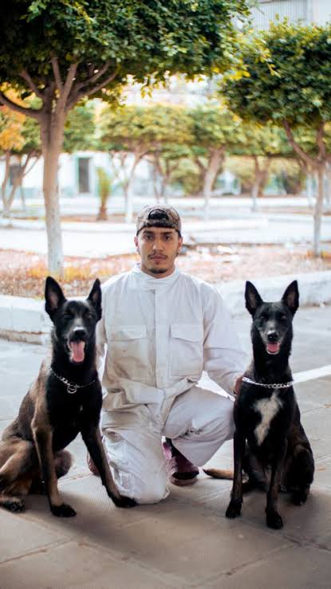

Como funciona
o nosso adestramento?
Transformando Comportamentos com Paciência e Respeito
O adestramento é muito mais do que apenas ensinar comandos básicos; é uma ferramenta
essencial para fortalecer o vínculo entre você e o seu cão, garantindo uma convivência
harmoniosa, segura e feliz. Na PATAS & PELOS, nosso método é baseado no reforço positivo,
premiando os comportamentos desejados e construindo uma relação de confiança mútua.
O processo de adestramento passa por etapas fundamentais:
- Avaliação Inicial e Comportamental: Antes de começar, nossos profissionais analisam o
perfil, a idade, a energia e as necessidades específicas do cão para criar um plano de
ensino personalizado. - Socialização e Estímulos: O cão aprende a lidar com diferentes estímulos, sons, pessoas
e outros animais, reduzindo medos, ansiedades e reatividade no dia a dia. - Comandos Básicos de Obediência: O pet aprende comandos fundamentais de controle
e segurança, como sentar, deitar, ficar, vir quando chamado e caminhar junto ao tutor sem
puxar a guia. - Correção de Hábitos Indesejados: Trabalhamos de forma educativa para corrigir
comportamentos comuns, como morder móveis, pular nas visitas, fazer necessidades no
lugar errado e latidos excessivos. - Orientação para os Tutores: O adestramento não é feito apenas para o cão, mas também
para a família. Ensinamos os tutores como manter a consistência, a postura correta e a
comunicação clara em casa.
